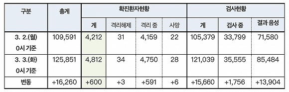

韩国新冠患者升破3500人，78个国家和地区对韩入境管制
原文链接 备份链接 图片来源：Yonhap “ 截至目前，除确诊患者外，韩国接受病毒检测的人数累计93459人，有61037人的检测结果呈阴性，其余32422人的结果还未出炉。 ” 韩国中央防疫对策本部3月1日通报，截至当天上午9时，韩国 …
图片来源：Yonhap
“
文在寅强调，要透明公开疫情信息，加快病毒检测诊断速度，提高抗疫效率。
”
韩国中央防疫对策本部3月3日通报，截至当天0时，韩国较昨日0时新增600例新冠病毒感染病例，累计确诊4812例，死亡增至28例，治愈增至34例。
截至目前，除确诊患者外，韩国接受病毒检测的人数累计121039人，24小时新增15660人，有85484人的检测结果呈阴性，其余35555人的结果还未出炉。

来源：韩国中央防疫对策本部
韩国新冠肺炎确诊病例在26日超过1000例，仅时隔6天便逼近5000例。目前，韩国近九成（89%）确诊病例集中在大邱和庆北这两个相邻地区，分别有两个主要的传染发生地：新天地大邱教会和庆北清道郡大南医院。
截至2日0时，与新天地大邱教会相关的确诊病例共2418例（57.4%）。截至3日0时，大邱累计确诊病例3600例，庆北确诊病例685例，分别新增519例和61例，首尔、京畿道和釜山市也已分别累计确诊98例、94例和90例。
死亡病例也主要出现在大邱和庆北，多为60岁以上的高龄患者。目前，大邱的医院病床已严重紧缺，据《中央日报》2日报道，截至1日上午9时，大邱共有2569人确诊感染，其中住院接受治疗的患者只有898人（35%）。
近几日，大邱已陆续出现多例居家隔离期间死亡的病例。对此，大邱市灾难本部决定开通24小时热线，安排专门的医生对尚未被收治住院的患者进行跟踪管理，并保证所需药品的供应。
据韩联社2日报道，总统文在寅当天已再次前往大邱，在国军大田医院看望慰问医患人员，并听取了抗疫报告。他强调，要透明公开疫情信息，加快病毒检测诊断速度，提高抗疫效率。
这是文在寅上月25日访问大邱后时隔仅6天再赴抗疫第一线。目前，国军医院共收治从大邱市和庆尚北道转入的34名确诊患者，运营“免下车”病毒检测采集站。文在寅现场查看了免下车检测的实施情况，并要求其他地方自治团体积极效仿。
文在寅表示，与2015年中东呼吸综合征（MERS）疫情蔓延的情况相比，韩国应对传染病的水平大有提升，消除了大量医护人员被传染等问题。文在寅还表示，部队派出1400名医务人员投身防疫现场，占部队医务人员总数的四分之一，对此深表感谢，并叮嘱他们全力以赴地守护国民的健康和安全。
文在寅表示，国军医学研究所研发的快速检测法能将新冠病毒的检测时间从6个小时缩短到20分钟，目前已向食品医药品安全处申请批准。如能获批投入临床应用，将大幅提高新冠病毒检测速度。

长按识别二维码
获取更多文章

原文链接 备份链接 图片来源：Yonhap “ 截至目前，除确诊患者外，韩国接受病毒检测的人数累计93459人，有61037人的检测结果呈阴性，其余32422人的结果还未出炉。 ” 韩国中央防疫对策本部3月1日通报，截至当天上午9时，韩国 …
原文链接 备份链接 图片来源：Yonhap “ 《东亚日报》指出，截至27日上午，加上民间医疗机构，韩国总共仅有1077张负压病床，已远少于确诊病例人数。 ” 韩国中央防疫对策本部2月28日通报，截至当天上午9时，韩国较昨日新增256例新 …
原文链接 备份链接 从1月13日中国境外出现首例新冠肺炎确诊病例，到2月末病毒登陆六个大洲，新冠疫情已经席卷了除南极洲外地球上的所有大洲。 截至3月2日，在中国以外，已有61个国家累计向世卫组织报告了8739例病例，其中已有127例死亡病 …
原文链接 备份链接 图片来源：Kyotonews “ 韩国新天地受害者团体宣布将以违反《传染病预防法》和《特定经济犯罪加重处罚法》对新天地总会长李万熙提起指控。 ” 韩国中央防疫对策本部2月29日通报称，截至当天下午4时，韩国较当天上午9 …
原文链接 备份链接 韩国1月20日发现首例确诊病例，此后一个月疫情发展缓慢，到2月18日确诊31例。2月19日后突然暴增，一周新增超过1200例。 18日确诊的第31号患者，被视为“超级传播者”。 韩国新冠疫情的一大特征是，在特定群 …